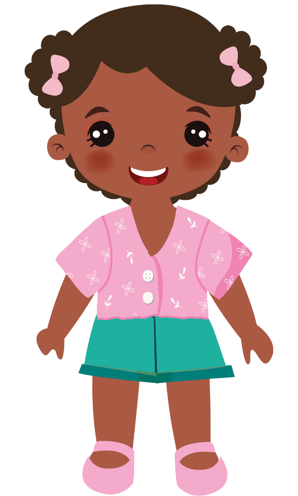

Pode ficar aberta ou fechada, pode dar oi e tchau. Com ela podemos escrever, segurar um objeto e até fazer carinho no nosso pet.
Qual parte do corpo é essa?

Clique nas opções para ver a parte do corpo selecionada
Pescoço
Orelha
Mão
Enviar
x
Próxima pergunta